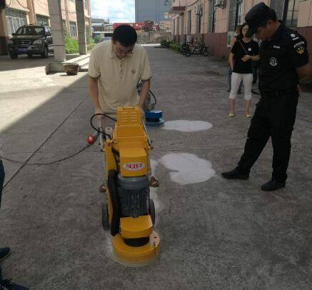
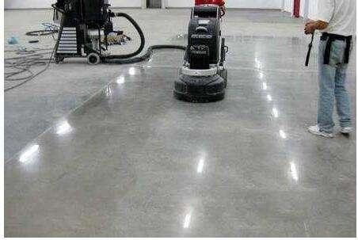

水泥地面打磨
水泥地面打磨施工方法
1、基层要求：对起砂地面进行清扫，无浮灰，保持干燥（可允许潮湿，不得有明火），缺损部位应在先进行增硬耐磨处理后用302N高强修补料修补，修补过的部位，再进行一遍增强耐磨处理。
2、增硬耐磨处理：直接喷洒或涂刷起砂处理剂，保证充分浸润吸收，30分钟内随时补充被吸引收的处理剂，保持浸润状态。一般3-4天，自然反应固化，即可达到理想效果。
3、参考用量： 根据地面起砂状况，用量一般为20/平方

水泥地面打磨起砂的原因
1.水灰比过大：即拌合的混凝土水量大，导致混凝土表面泌水，降低混凝土表面强度。
2.砂石料的级配不合理、含泥量高：骨料级配不合理、过细的土砂也易导致地面起砂，影响水泥的早期水化及混凝土的凝结。
3.施工过程中的过分振捣：加剧混凝土表面的泌水，导致混凝土表面强度较低。
4.养护不当：未能及时养护或养护不充分，暴晒或大风导致混凝土表面大量失水，表面得不到充分水化，导致强度较低。
5.其它原因：压光时间掌握的不好、混凝土表面未达到一定的强度就上人作业、低温下施工混凝土表面受冻等。
水泥地面打磨起砂处理办法
工地上常常使用界面剂搅拌水泥进行涂刮，希望将起砂部位覆盖，事实上这样不会达到预期效果，一般情况干燥后表层又会龟裂，剥落，大面积起壳。这是由于基层未处理好的原因，基层起粉，想通过覆盖达到修复的效果是完全错误的想法。
的[1]水泥地面起砂处理剂是专门针对混凝土起砂、起灰开发的一种新型材料，只需在混凝土表面进行涂刷即可处理起砂。